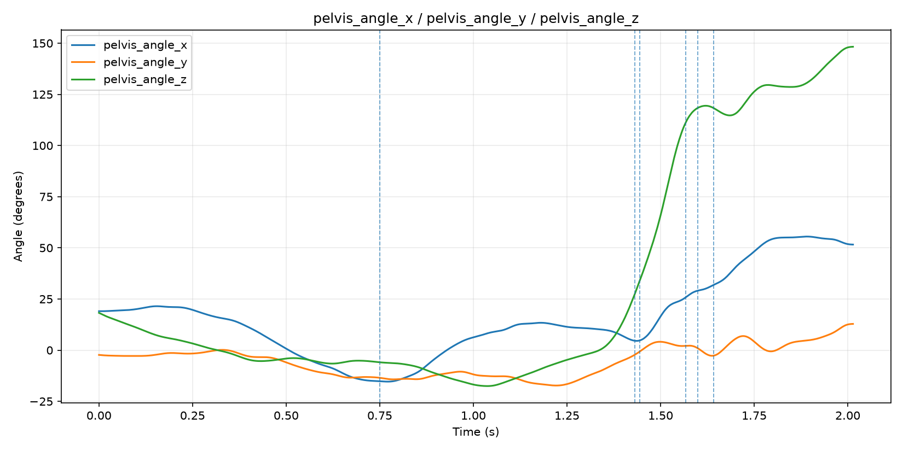
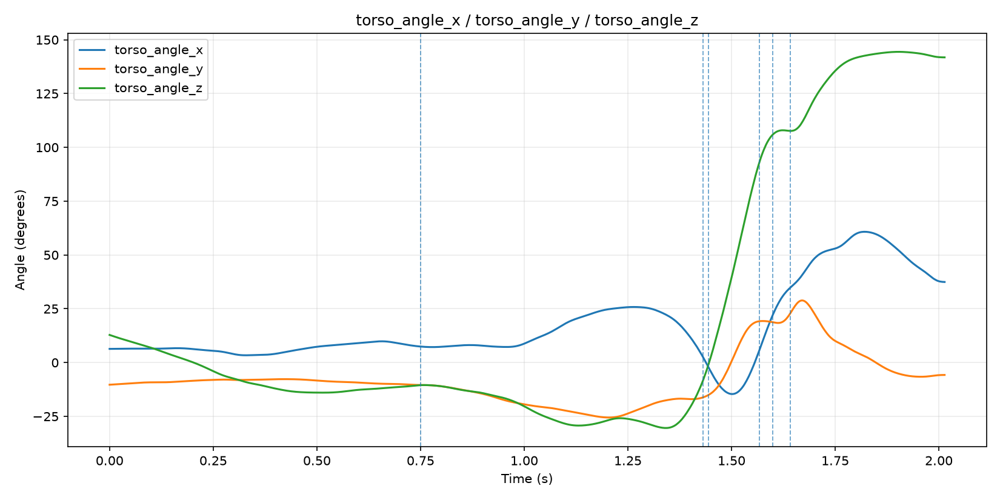
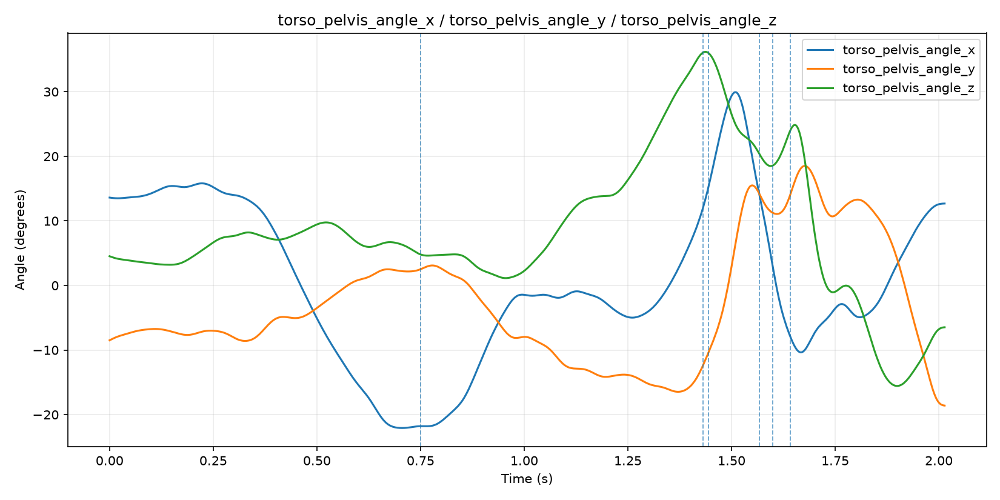
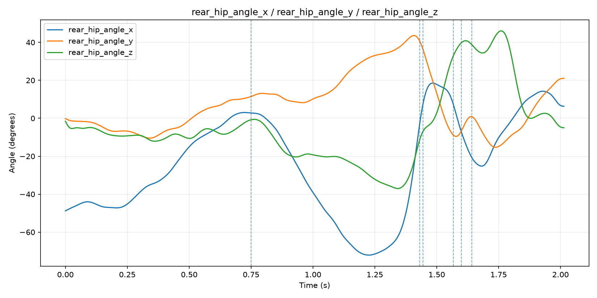
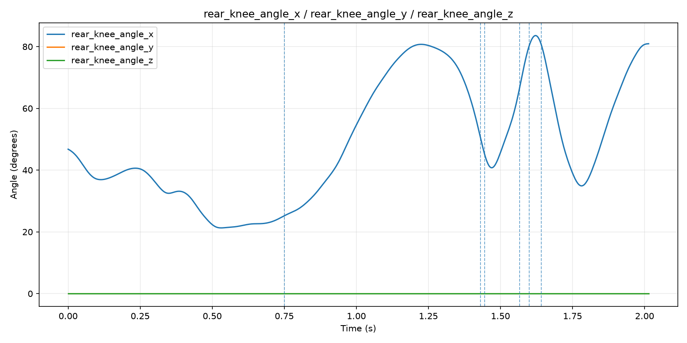
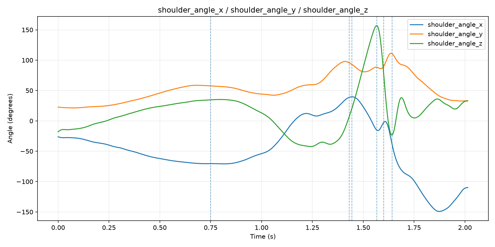
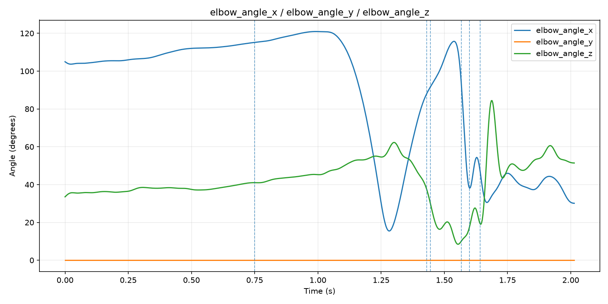
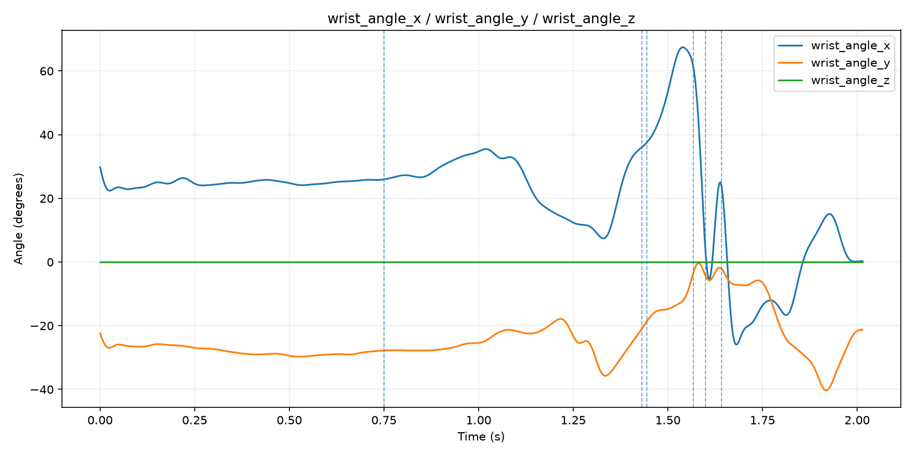

Trial 3034_1 · 726 frames · 0.0000–2.0139 s · official joint-angle trajectories
Dashed vertical lines indicate recorded event times. Angle conventions should be confirmed before interpreting signs or comparing directly with another model.
| Event | Time (s) |
|---|---|
| Peak knee height | 0.7500 |
| Foot plant (10%) | 1.4306 |
| Foot plant (100%) | 1.4444 |
| Maximum external rotation | 1.5667 |
| Ball release | 1.6000 |
| Maximum internal rotation | 1.6417 |








Raw reference table: reference_joint_angles_3034_1.csv